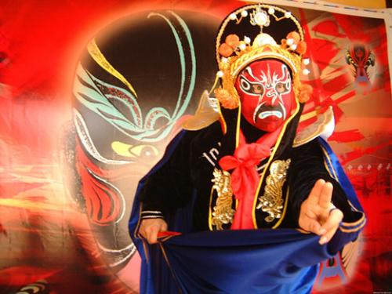

变脸
变脸是运用在川剧艺术中塑造人物的一种特技。是揭示剧中人物内心思想感情的一种浪漫主义手法。
相传“变脸”是古代人类在面对凶猛野兽的时候，为了生存把自己脸部用不同的方式勾画出不同形态，以吓跑入侵的野兽。川剧把“变脸”搬上舞台，用绝妙的技巧使它成为一门独特的艺术。
变脸的手法大体上分为三种： “抹脸”、“吹脸”、“扯脸”。
此外，还有一种“运气”变脸。则油彩涂于额上或眉毛上，如果只变下半部脸，则油彩可涂在脸或鼻子上。“吹脸”只适合于粉末状的化妆品，如金粉、墨粉、银粉等等。有的是在舞台的地面上摆一个很小的盒子,随着剧情的进展，在舞蹈动作的掩护下，一张一张地将它扯下来。如《白蛇传》中的钵童(紫金铙钵)，可以变绿、红、白、黑等七、八张不同的脸。再如《旧正楼》中的贼、《望娘滩》的聂龙等也使用扯脸。"扯脸"有一定的难度。一是粘脸谱的粘合剂不宜太多，以免到时扯不下来，或者一次把所有的脸谱都扯下来。二是动作要干净利落，假动作要巧妙，能掩观众眼目。“抹脸”是将化妆油彩涂在脸的某一特定部位上，到时用手往脸上一抹，便可变成另外一种脸色。如果要全部变，则油彩涂於额上或眉毛上，如果只变下半部脸，则油彩可涂在脸或鼻子上。如果只需变某一个局部，则油彩只涂要变的位置即可。如《白蛇传》中的许仙，《放裴》中的裴禹，《飞云剑》中的陈仑老鬼等都采用“抹脸”的手法。还有一种方式是“运气变脸”，现已很少使用。